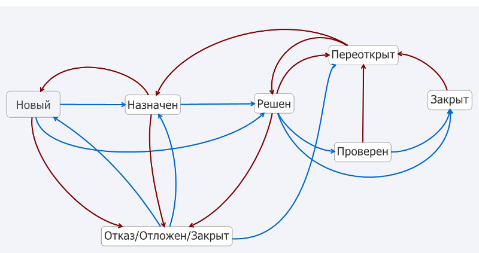

Пятерочка запустила проект с картами скидок. После регистрации карты на сайте, в личном кабинете можно отслеживать количество накопленных бонусов. Я, как обычный пользователь, сначала активировала карту. И находясь в личном кабинете, увидела внизу страницы (в футере) полезнейшую информацию, которая привлекла мое внимание. Согласитесь, логично же почитать информацию "как использовать карту", "правила начисления баллов", "правила списания балов" и прочее. И даже кнопочка "обратная связь" есть. НО! Ссылки не работают!
То есть, на всех пунктах в футере в ссылках в href прописан якорь #. Иначе, все дороги ведут в личный кабинет, где вы не увидите "правила программы лояльности" или "часто задаваемые вопросы о Выручай-карте". Решила воспользоваться "обратной связью". И здесь образовался "нежданчик". Кнопка не работает. В ссылке у нее href пустой. Я вернулась на основной сайт, оказалось, что почти вся информация есть там, но из личного кабинета по ссылкам туда не попасть. Попробую составить упрощенный баг репорт. (Данные карты и пароля здесь приведу произвольные).
Summary
Не прописан путь к файлам в ссылках в футере в личном кабинете
Description
ссылки в футере ведут на главную страницу личного кабинета, в href стоят якоря # и не перенаправляют на необходимые страницы
"Правила программы лояльности" - действующая ссылка https://5ka.ru/media/documents/loyality/5ka_loyalty_rules.pdf
"Как использовать карту" - ссылки на эту информацию нет,
"Правила начисления баллов" - https://5ka.ru/card/#section3, "Правила списания баллов" - https://5ka.ru/card/#section4,
"Часто задаваемые вопросы о Выручай-карте" - https://5ka.ru/faq/,
кнопка обратной связи - https://5ka.ru/card/#section7
JS в браузере включен. Версия сайта v.1.01, браузер chrome v.57.0.2987.133, Firefox v.53.0
Attached Files
ссылка с якорем в личном кабинете.jpg
Вот такой приблизительный баг репорт получился. Можно еще добавить Severity (критичность бага, выставляет тестировщик) - major (важный). Почему мне показался баг важным? Моя логика проста. При получении карты на кассе магазина, кассир обязательно скажет, что карту нужно активировать. Пользователь в буклете (приложен к карте) на первой странице найдет способ активации на сайте и таким образом попадет на 5ка/card. А первый блок на весь экран будет содержать большую кнопку "активировать карту". Пользователь не всегда прежде, чем на нее нажать, будет пролистывать страницы вниз, чтобы увидеть, а что там есть еще...внизу... Да и меню сайта с доп.инфо по карте появится только на второй странице. То есть, пользователь заведомо не осведомлен, есть ли вообще важная информация здесь. Главное! Активировать карту. Что он и делает, тем самым попадая в личный кабинет, где ссылки на правила и FAQ есть, но толку от них нет.
P.S. Да, крутой сайт, решила отправить вопрос по поводу ссылок, заполнила форму, оставила почту, даже идиотскую капчу прошла, знаете, ту, где вас заставляют на картинке отметить все фото с машинами или витринами магазинов (проще никак нельзя было сделать, но ок)...ага, нажимаю на кнопку "отправить", а оно, блин...не отправляется :) Какого? Залезаю в "сеть", а там POST [HTTP/1.1 400 Bad Request 122мс]. Жестоко.
Шпаргалка терминов в тестировании
Для себя собираю все определения и термины по тестированию. Все основное по теории тестирования и техникам тест-дизайна (с точки зрения новичка). Получается, своего рода, конспект, который со временем буду пополнять новыми данными.
Тестирование ПО - это процесс исследования ПО с целью получения информации о качестве продукта.
Другое определение тестирования приводится на сайте Protesting.ru.
Тестирование ПО - проверка соответствия между реальным и ожидаемым поведением программы, осуществляемая на конечном наборе тестов, выбранном определенным образом.
Тест-кейс - это профессиональная документация тестировщика, последовательность действий направленная на проверку какого-либо функционала, описывающая как придти к фактическому результату. Набор тест-кейсов называют тест-комплектом.
Чек-лист - это документ, описывающий что должно быть протестировано. При этом чек-лист может быть абсолютно разного уровня детализации. На сколько детальным будет чек-лист зависит от требований к отчётности, уровня знания продукта сотрудниками и сложности продукта.
Верификация - это процесс оценки системы или её компонентов с целью определения удовлетворяют ли результаты текущего этапа разработки условиям, сформированным в начале этого этапа. В частности, верификация проверяет соответствие между различной документацией (нормы стандартов, описание технического задания, пользовательская документация) и функционированием самого ПО. Кроме того, проверяется, что требования, проектные решения, документация и код оформлены в соответствии с нормами и стандартами, принятыми в данной стране, отрасли и организации при разработке ПО.
Валидация - это определение соответствия разрабатываемого ПО ожиданиям и потребностям пользователя, требованиям к системе. Верификация отвечает на вопрос "Делаем ли мы продукт правильно?", а валидация- на вопрос "Делаем ли мы правильный продукт?"
Баг - это каждое отдельное несоответствие продукции установленным требованиям.
Обеспечение качества ПО - это процесс или результат формирования требуемых свойств и характеристик продукции по мере её создания, а также — поддержание этих характеристик при хранении, транспортировке и эксплуатации продукции
Серьезность (Severity) - это степень негативного влияния бага на систему. Выставляет тестировщик, определяя влияние дефекта на работоспособность приложения.
Приоритет (Priority) - это порядок, в котором дефекты должны быть исправлены. Определяются разработкой и бизнесом. Чем выше стоит приоритет, тем скорее нужно исправить дефект.
Этапы обеспечения качества ПО
Внутренний этап обеспечения качества ПО
Тестирование спецификации
Логика
Полнота
Функциональность
Однозначность
Unit-тесты
Code-review
Менеджерская приемка
Unit-тесты позволяют провести проверки на уровне кода, проверяя отдельные функции и методы.
Code-review позволяет определить степерь соответствия кода реализации регламентированным нормам и обеспечить его прозрачную поддерживаемость в будущем.
Менеджерская приемка позволяет определить общее соответствие фактической реализации ожидаемому результату заказчика
Внешний этап обеспечения качества ПО
Процедуры контролирующие природу качества созданного продукта:
Тестирование
Обработка пользовательской обратной связи
Альфа/Бета-тестирование
Обработка заявок в тех.поддержку
Взаимодействие в соц.сетях/интернете
А/В тесты
Фокус-тесты
Классификация тестирования
Объект тестирования
Функциональное
Юзер интерфейс UI
Тестирование спека
Знание тестируемого объекта
Метод белого ящика
Метод серого ящика
Метод черного ящика
Степень автоматизации
Ручное
Полуавтоматизированное
Автоматизированное
Степень изолированности компонентов
Модульное тестирование
Компонентное тестирование
Интеграционное тестирование
Системное тестирование
Момент проведения испытаий
Тестирование при приемке (смоук тестирование)
Тестирование новой функциональности
Регрессионное тестирование
Характер сценариев
Позитивное тестирование
Негативное тестирование
Степень подготовленности к испытаниям
Тестирование по спецификации
Интуитивное тестирование
Пояснения к некоторым категориям
По степени изолированности
Модульное тестирование - процесс, позволяющий проверить корректность отдельных модулей исходного кода программы. Это тестирование белого ящика, те самые unit-тесты.
Компонентное тестирование проверяет функциональность в частях приложения, котороые можно протестировать отдельно друг от друга (модули программ, объекты, классы, функции и др.
Различия между модульным и компонентным тестированием заключаются в том, что в компонентном тестировании в качестве параметров функций используют реальные объекты и драйверы, а в модульном тестировании - конкретные значения.
Интеграционное тестирование - тестирование групп отдельных програмных модулей. Обычно интеграционное тестирование проводится после модульного и перед системным тестированием.
Системное тестирование - тестирование, выполняемое на полной, интеграционной системе, с целью проверки соответствия системы исходным требованиям.
По моменту проведения
Приемочное тестирование - минимальный набор тестов на явные ошибки. «Дымовой тест» обычно выполняется самим программистом; не проходящую этот тест программу не имеет смысла отдавать на более глубокое тестирование.
Но есть еще одно определение приемочного тестирования.
Формальный процесс тестирования, который проверяет соответствие системы требованиям и проводится с целью:
определения удовлетворяет ли система приемочным критериям;
вынесения решения заказчиком или другим уполномоченным лицом принимается приложение или нет.
Решение о проведении приемочного тестирования принимается, когда:
продукт достиг необходимого уровня качества;
заказчик ознакомлен с Планом Приемочных Работ, где описан набор действий, связанных с проведением приемочного тестирования, дата проведения, ответственные и т.д.
Регрессионное тестирование - это вид тестирования направленный на проверку изменений, сделанных в приложении или окружающей среде, для подтверждения того факта, что существующая ранее функциональность работает как и прежде.
Комбинирование процедур тестирования
Тестирование спецификации (на этапе аналитики)
Компонентное тестирование (на этапе разработки)
Интеграционное тестирование (на этапе тестирования)
Системное тестирование (на этапе тестирования)
Регрессионное тестирование (на этапе тестирования)
Приемочное тестирование (на этапе релиза)
Основные типы дефектов
Функциональные ошибки
Визуальные ошибки
Логические ошибки
Ошибки контента
Ошибки удобства использования
Ошибки безопасности
Функциональными можно называть такие ошибки, когда, например, не сохраняются изменения данных в профиле, не работает удаление из корзины товара или не работает добавление комментария.
Примеры визуальных ошибок, когда, к примеру, не отображается картинка на сайте, текст вылезает за границы поля.
Логические ошибки - можно поставить дату рождения в будущем, неверная работа логики поиска.
Ошибки контента - орфографические и пунктуационные ошибки, картинка товара не соответствует описанию товара или конвертация валют идет по некорректному курсу.
Ошибки удобства использования - отсутствие подсветки или текста ошибки при некорректном заполнении поля формы или сборс значений заполненных полей при некорректной попытке регистрации.
Ошибки безопасности - это XSS-уязвимости, SQL-инъекции
Также баги разделяют
по степени критичности (Severity)
Блокирующие (blocker)
Важные (Major)
Обычные (Normal)
Малозначимые (Minor)
Блокирующие баги - ошибки, из-за которых дальнейшая работа с системой считается невозможной. Например, работа на сайте возможна только зарегистрированным пользователям, а вход осуществляется только после подтверждения e-mail, указанного при регистрации. Если подтверждение не пришло, то и работать с системой не представляется возможным.
Важные баги, те из-за которых система работает не так, как надо. Например, сообщение от пользователя через форму обратной связи приходит на почту администратора, но в этом сообщении не указан e-mail пользователя для связи. Невозможность ответить пользователю может повлиять на весь бизнес.
Обычные/нормальные баги, те, что имеют сравнительно небольшое влияние. Например, в форме обратной связи в поле сообщение текст вводится курсивом. Это может немного раздражать пользователя, но кардинально не влияет на бизнес.
Малозначимые баги как правило, небольшие, типа "опечаток", шрифт Times New Roman вместо Arial в письме, которое приходит через форму обратной связи.
Тестировщик должен оценить влияние на работоспособность приложения. И чем выше severity, тем маштабнее негативные последствия данного дефекта
по Приоритету (Priority)
Высокий (High)
Средний (Medium)
Низкий (Low)
Обычно Severity и Priority не имеют строгого набора наименований. Все зависит, например, от баг трекинга и/или его настроек. Так, в Severity может присутствовать дополнительный пункт "Критичный (Critical)", а в Priority Немедленно (immediate). Такой же подход используется и для классификации, например,
по Частоте повторяемости
Всегда
Время от времени
Единичный случай
Оформление ошибок
Следует помнить правило! Один дефект - один репорт. А также, название должно быть "говорящим" по принципу "Что? Где? Когда?".
Описание содержит:
предусловия воспроизведения
последовательность действий для воспроизведения (шаги)
Фактический результат
Ожидаемый результат
Иначе говоря, составляя описание бага, мы должны помнить о трех вопросах:
1. Какие шаги привели к ошибке? 2.Что ожидали увидеть? 3.Что на самом деле увидели?
В дополнительной иформации можно размещать окружение и/или условия воспроизведения, скриншоты, логи.
На просторах интернета нашла замечательную схему, иллюстрирующую жизненный цикл дефекта 